pt cm
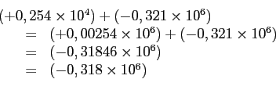
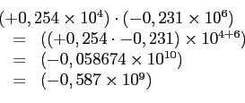
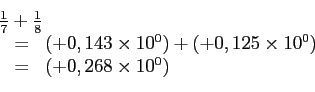
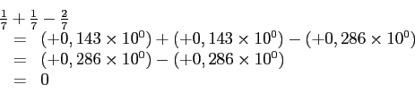
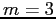
chiffres,
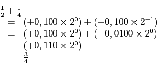
est exacte alors qu'en base 3, on a
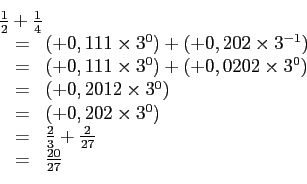
qui n'est manifestement pas égal à
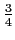
.Réciproquement, en base 3, la somme
est exacte alors qu'en base 2, on a
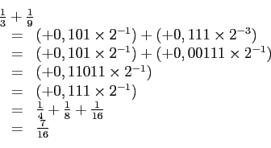
qui est clairement inexacte.
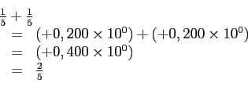
est exacte alors qu'en base 2, on a
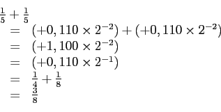
qui n'est manifestement pas égal à .
En arithmétique à
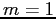
chiffres,
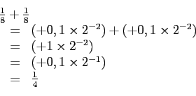
est exacte alors qu'en base 10, on a
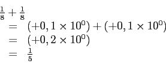
qui n'est manifestement pas égal à
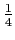
.
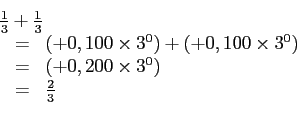
est exacte alors qu'en base 10, on a
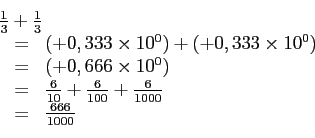
qui n'est manifestement pas égal à
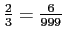
.En arithmétique à chiffres,
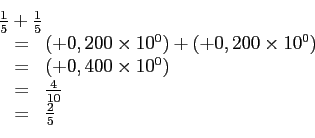
est exacte alors qu'en base 3, on a
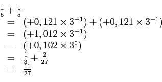
qui n'est manifestement pas égal à .
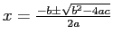
, on obtient les racines
et
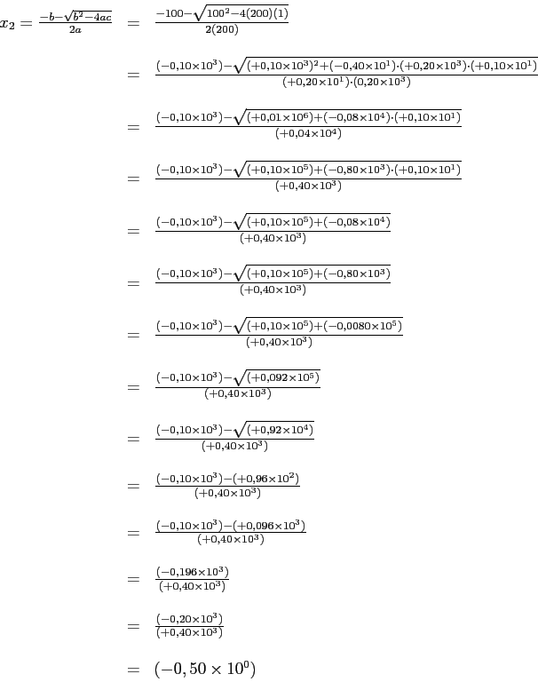
En utilisant plutôt la formule
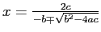
, on obtient les racines
et
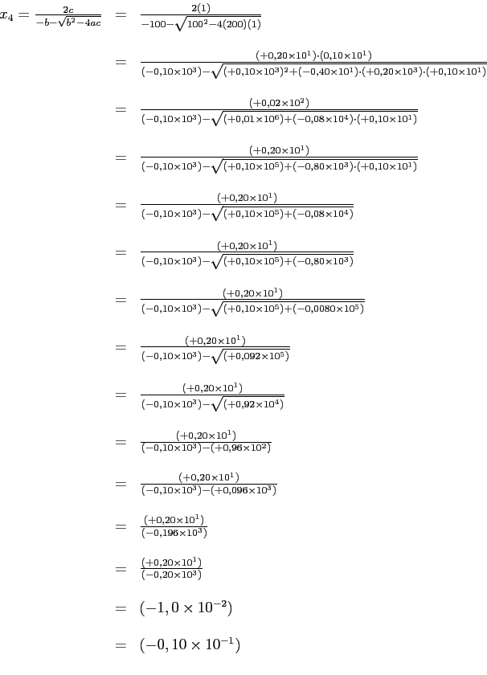
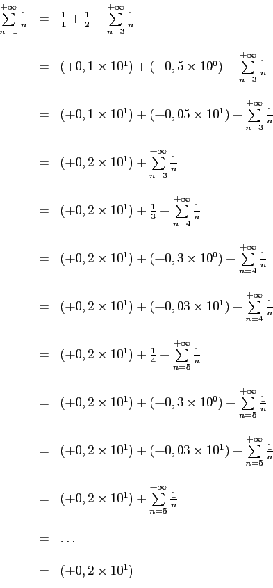
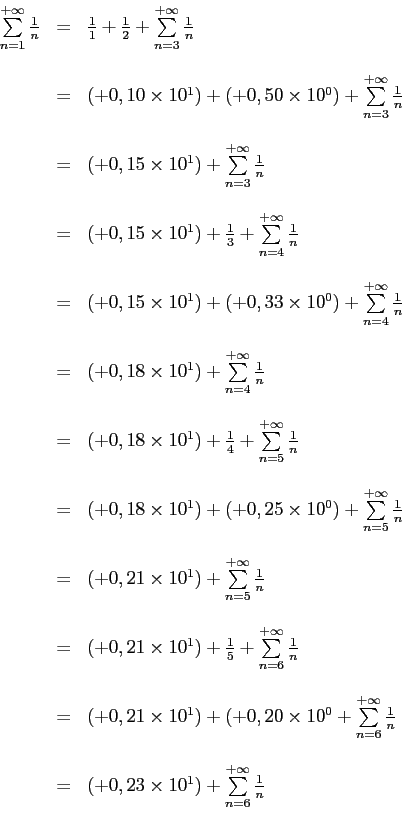
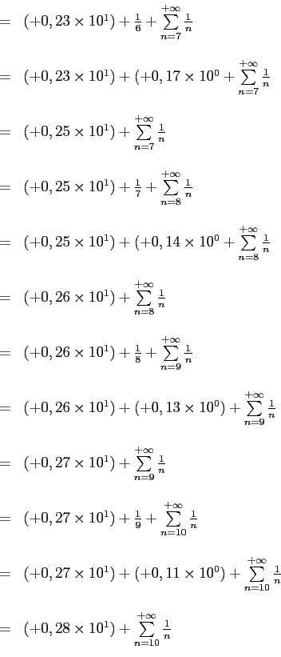
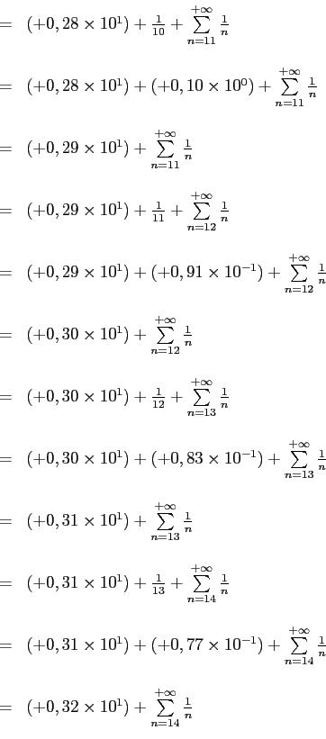
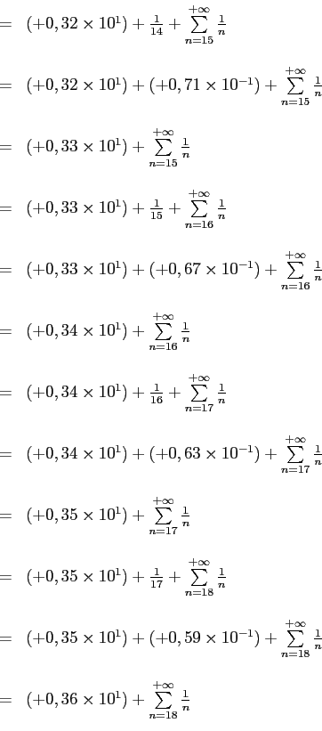
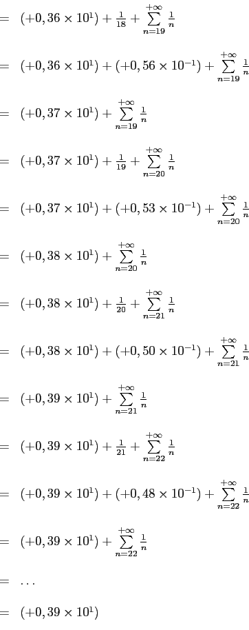
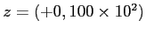
et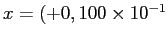
. Alors,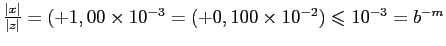
. Dans ce cas, on a que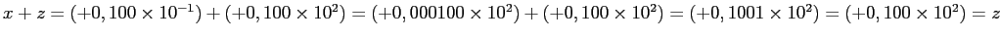
.D'autre part, si on prend
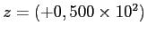
et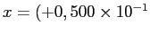
. Alors, . Dans ce cas, on a que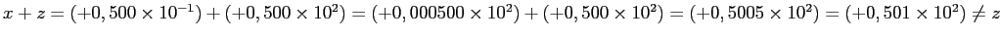
.
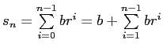
. Or,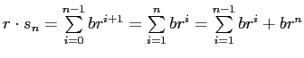
. Donc,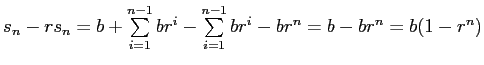
. Ainsi,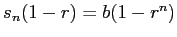
entraîne que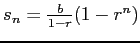
puisque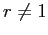
.
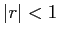
, alors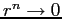
lorsque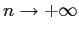
et ainsi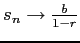
.
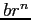
deviendra plus petit que l'epsilon-machine et ne contribuera plus aux sommes partielles.
Prenons  ,
,
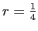
et travaillant en arithmétique à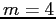
chiffres.On obtient :
Donc, la suite converge vers . Or, . La série ne converge donc pas vers la même valeur.
Le système devient successivement
d'où on conclut qu'il n'existe aucune solution.
Le système devient successivement
Il y a donc une unique solution qui est .
On obtient que est représenté par
qui donne avec mantisse à 17 chiffres .
Or, peut être représenté en base 2 avec mantisse à 17 chiffres par . Il est donc clair que .
À trois chiffres, on obtient
À quatre chiffres, on obtient
À cinq chiffres, on obtient
À six chiffres, on obtient
À sept chiffres, on obtient